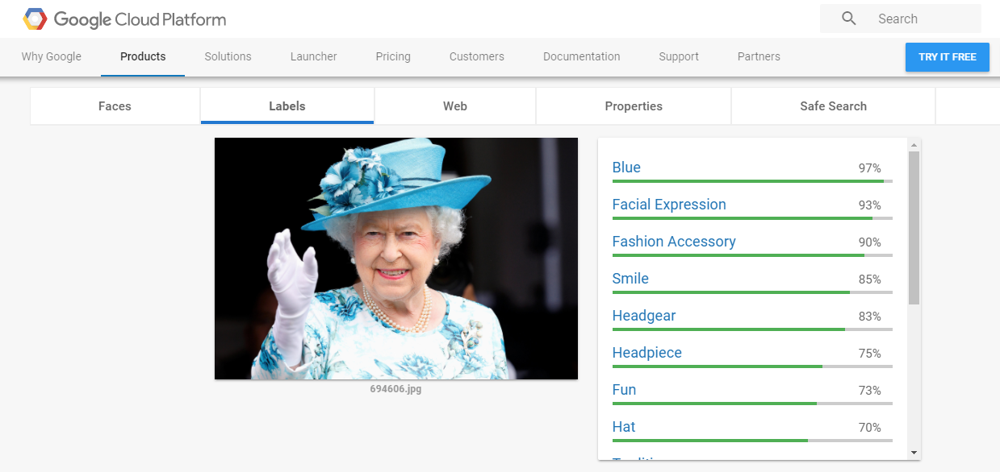
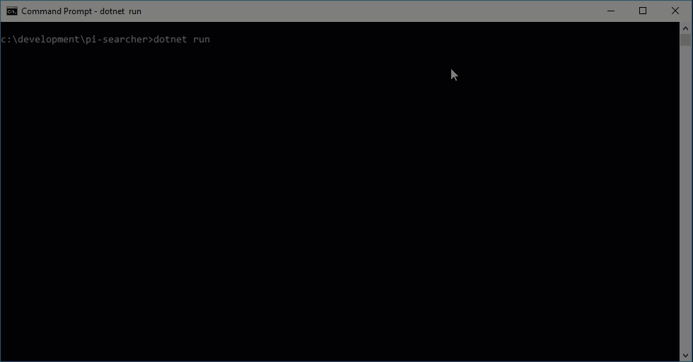

Introduction to Programming
What is programming?
Writing human "readable" text that is transformed into a series of commands a computer can understand
What kind of tasks would make good a candidate for a program?
- Repeatable tasks
- Manual tasks with risks of human error
- Pulling together lots of data from a wide range of sources
What kind of tasks would not make a good candidate for a program?
- Making decisions
- Applying context to a situation
- Recognising images
- All of these are changing as innovations in machine learning are being made
Who is this?
This is what google vision thought
What is the 200th digit of PI ?
What is Programming? (Updated)
"Humans and computers using their strengths together to accomplish tasks"
Computers are very literal
Understanding Pseudocode
- Planning technique to write out a programs logic
- Language agnostic
- Great tool for collaborating
Pseudocode Techniques
A simple list
- Boil water in kettle
- Put tea bag in cup
- Wait for water to boil
- Add boiled water to cup
- Add sugar
- Add milk
- Serve
Flow Chart

Flow Chart Key

Pseudocode
PROGRAM PrintSumOf1To5
Total = 0;
A = 1;
WHILE (A <= 5)
DO Total = Total + A;
A = A + 1;
ENDWHILE
Print Total;
END
Pseudocode exercise
Variables
A value that is stored and accessible from within an application
Variable Types
| Name | Example | Description |
|---|---|---|
| String | "Hey there!" | A series of characters surrounded by quotation marks |
| Number | 26 | Any number between
-253 and
253
|
| Boolean | True/False | A computer science concept of a value that either be true or false |
| Array | ["Hello", 2, true] | An ordered collection of data, can either be a primitive or an object |
Assigning Variables
var string = "hello there!";
var number = 26;
var boolean = true;
var array = ["hello there!", 26, true];